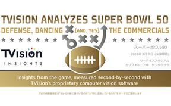
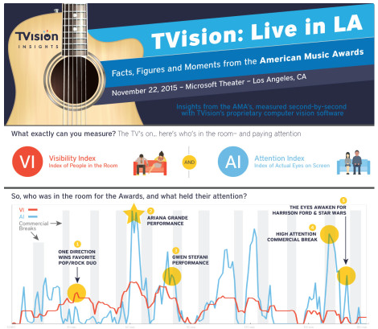

すべてのカテゴリー
- すべてのカテゴリー
- インサイト
- メディア掲載
- アワード
- その他
すべての年
- 2016
- 2015
-
2016/09/27インサイト
視聴「質」からみる、2016年の大統領候補討論会で最も注目を集めた瞬間
討論会における両氏の発言へのアテンションや、セグメントごとの視聴者の注目度を調査しました。
詳細はこちら -

2016/08/01インサイト
10-20代男女 注視度が高いタレントランキング
2016/4/4 - 2016/6/29の期間内にCM出演回数が3回以上のタレント83人の中からAIスコアでランク付けしました。
詳細はこちら -
2016/07/28メディア掲載
Tvisionプレゼンテーション @ Cannes Lions 2016
米TVision Insights共同創業者Dan SchiffmanがハーバードビジネススクールのThales Teixeiraと共にカンヌライオンズのイノベーションステージに登壇し、TVIがメディアプランニングやクリエイティブチェックに与える影響について講演しました。
詳細はこちら -

2016/07/28インサイト
番組の文脈との関連性が、そのTVCMへのより高いエンゲージメントを呼び起こす
弊社米国でのCM視聴質調査で、「番組の文脈との関連性が、そのTVCMへのより高いエンゲージメントを呼び起こす」ということが分かってきました。
詳細はこちら -

2016/05/25その他
測定パネル数を関東600世帯に拡大し、VizTVサービスを提供開始
2016年4月より測定パネル数を関東600世帯に拡大し、視聴質測定データを拡充するとともに、BIツール提供サービスを開始しました。
詳細はこちら -
2016/03/03アワード
日経コンピューターの「ミライITアワード2016」に選出されました
3月3日発売の日経コンピュータ特集「ミライITアワード2016」にて、弊社サービスがマーケティング部門で選出されました。
詳細はこちら -

2016/02/11インサイト
アメフトの祭典：スーパーボールの視聴状況を分析
アメリカでのスーパーボウル人気は絶大で、TVの視聴率も軒並み40%を越え、視聴者数では約1億3千万人以上と、国民の2人に1人が生で観戦しております。
視聴質データ（AI値：注目度合い） -
2016/01/30インサイト
日本の大晦日：紅白歌合戦の視聴状況を分析
その年に活躍した芸能人や翌年の大河ドラマの出演者も登場することでいろんな見どころがありますが、 他にも様々な裏番組がひしめく中で、どのシーンが注目を集めていたのか?
視聴質データ（AI値：注目度合い） -

2016/01/03インサイト
アメリカン・ミュージック・アワードの視聴状況を分析
弊社米国法人が、アメリカン・ミュージック・アワード中継番組の視聴状況を分析した結果を公表しました。
TVision米国法人HPへ -
2016/01/03インサイト
AFCチャンピオンシップの視聴状況を分析
弊社米国法人が、NFLの2つのカンファレンスの1つであるアメリカン・フットボール・カンファレンス（AFC）の 優勝決定戦の中継番組の視聴状況を分析した結果を公表しました。
TVision米国法人HPへ
-
2015/12/14その他
弊社米国法人が$2.5Mの資金調達を実施しました
これにより、日本法人・US法人共有のコア技術に対してより多くのリソースを割り当てることが可能になり、 より多様かつ斬新な切り口での分析をご提供できるように努めてまいります。
BostInnoへ -
2015/08/04メディア掲載
テレビCMは本当に見られている？ 年間2兆円市場の効果改善へ新指標を開発
日経ビッグデータにて、年間2兆円近くに上るテレビ広告市場において、費用対効果の改善につながる新指標を提案する企業としてご紹介いただきました。
日経BigDataへ -
2015/07/24メディア掲載
視聴者の反応 表情で解析
日経産業新聞にて、これまでアンケートなど定性的な調査に頼らざるを得なかった番組の質を示す「視聴質」を、最先端の顔認識技術を駆使して可視化する企業として紹介いただきました。
PDFはこちら -
2015/07/11メディア掲載
富裕層が好きな番組はテレ東 新指標が明かす視聴者の実像
週間ダイヤモンドにて、インターネットの動画広告の登場により企業の広告予算の配分や費用対効果の指標が変化する中で、視聴者の態度を集中度や感情を分析するサービスとして弊社サービスを紹介いただきました。
週刊ダイヤモンドHPへ -
2015/06/30メディア掲載
革新的なアイデアとプロダクトでイノベーションを創りだす：「Microsoft Innovation Award 2015」を授賞した13チーム
THE BRIDGEにて、最優秀賞を受賞しましたMicrosoft Innovation Award 2015の特集記事にて弊社事業をご紹介いただきました。
THE BRIDGE へ
-
2015/06/29メディア掲載
今年は画像解析？Microsoft Innovation Award 2015開催
ASCIIにて、最優秀賞を受賞しましたMicrosoft Innovation Award 2015の特集記事にて弊社事業をご紹介いただきました。
ASCII.jp へ
-
2015/06/25アワード
Microsoft Innovation Award 2015で最優秀賞を受賞しました
スタートアップ業界の一大イベントであるMicrosoft Innovation Awardにおいて、最優秀賞を受賞しました。 Microsoft Innovation Awardは日本マイクロソフトが主催する、 イノベーションをもたらすソフトウェアでビジネスを展開、または展開を予定しているITベンチャーを表彰するイベントです。 最優秀賞を受賞したことはチーム一同に大きな自信になっております。 テクノロジー面はもちろん、イノベーション性や社会へのインパクトを評価いただきました。 弊社サービスを広めていけるよう、加速度的に邁進していく所存です。
-
2015/05/8メディア掲載
視聴率 デジタル時代
朝日新聞にて、テレビ広告のより詳細な視聴実態を計測する新しい指標の１つとして、視聴者の表情の変化を秒単位で分析することで、番組やCMに対する視聴者の集中度といった進化した「視聴質」を計測する企業として紹介いただきました。
PDFはこちら
{kind=link}
{kind=link}